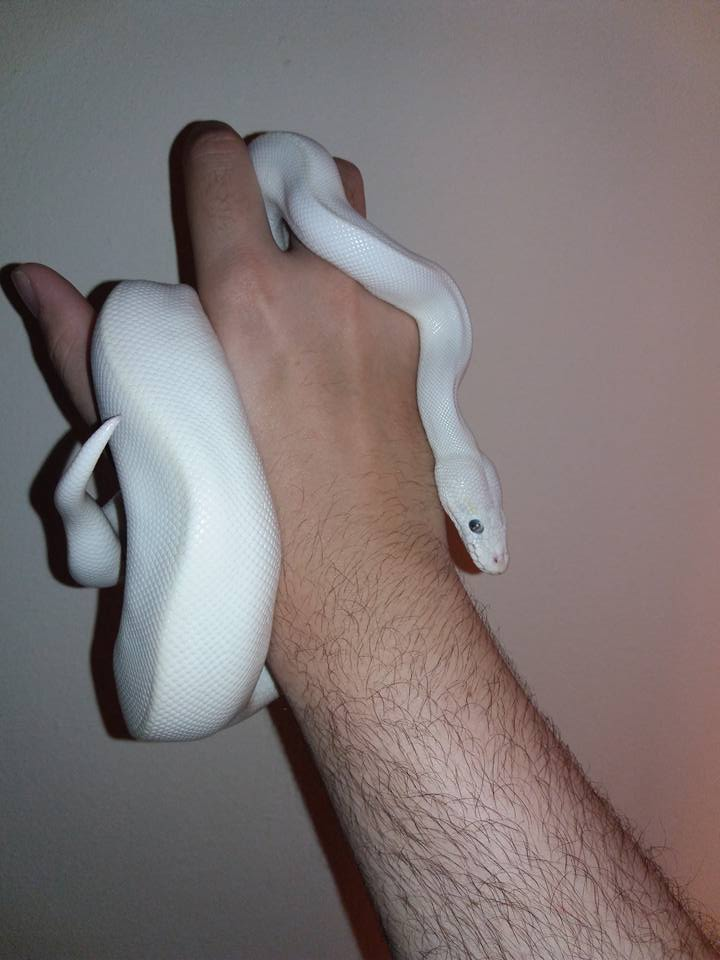

Virus
| Name: | Virus |
| Scientific Name: | Python regius |
| Gender: | Male |
| Age: | 1.5 years |

- INFORMATION -
Virus is a blue eyed leucistic (AKA BEL) Ball Python. Most commonly known as a LUCY.
A description about my exotic pets that keep and how they are cool(or not).
| Name: | Virus |
| Scientific Name: | Python regius |
| Gender: | Male |
| Age: | 1.5 years |
- INFORMATION -
Virus is a blue eyed leucistic (AKA BEL) Ball Python. Most commonly known as a LUCY.
| Name: | Karma |
| Scientific Name: | Python regius |
| Gender: | Female |
| Age: | 6 months |
- INFORMATION -
Karma is a Caramel(100% het ghost) Ball Python. HET is short for Heterozygous. Basically she has a "hidden" gene that you can't see displayed on her but her offsprings will display. Kind of how blue-eyes sometimes skips a generation in humans.
| Name: | Ace |
| Scientific Name: | Morelia spilota cheynei |
| Gender: | Male |
| Age: | Almost 1 year old |
- INFORMATION -
Ace and Spades were my first pair to pick up. We call him Ace because he's been very docile and tame since day 1. Has never even struck on accident.
| Name: | Spades |
| Scientific Name: | Morelia spilota cheynei |
| Gender: | Female |
| Age: | Almost 1 year old |
- INFORMATION -
Spades is my big girl. She is almost twice as large as Ace (female are usually larger). We actually got lucky and found out she had a Spades symbol on her head - so named her after that since it matches Ace's name.
| Name: | Mushu |
| Scientific Name: | Pogona |
| Gender: | Male |
| Age: | Almost 2 years old |
- INFORMATION -
Mushu is kind of a big jerk. He's very docile and lazy and often won't eat until you hand feed him. He's named after the dragon from Disney's Mulan.
| Name: | Basil |
| Scientific Name: | Atelerix |
| Gender: | Male |
| Age: | 7 months old |
- INFORMATION -
Basil is actually my fiancee's pet. We have a love/hate relationship. He's not blue - he doesn't collect rings. He just kind of deficates everywhere and eats. Also he likes to run in his wheel in the dark throughout the night. Contrary to popular belief they are not cuddly, poop everywhere, and are not very social animals.